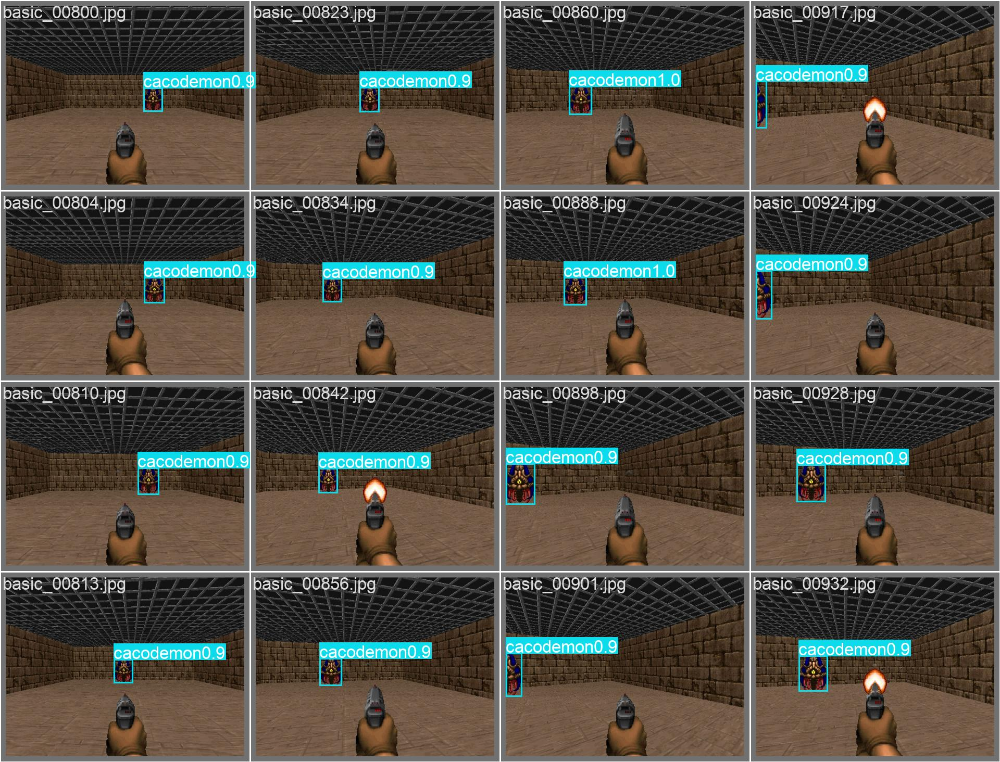
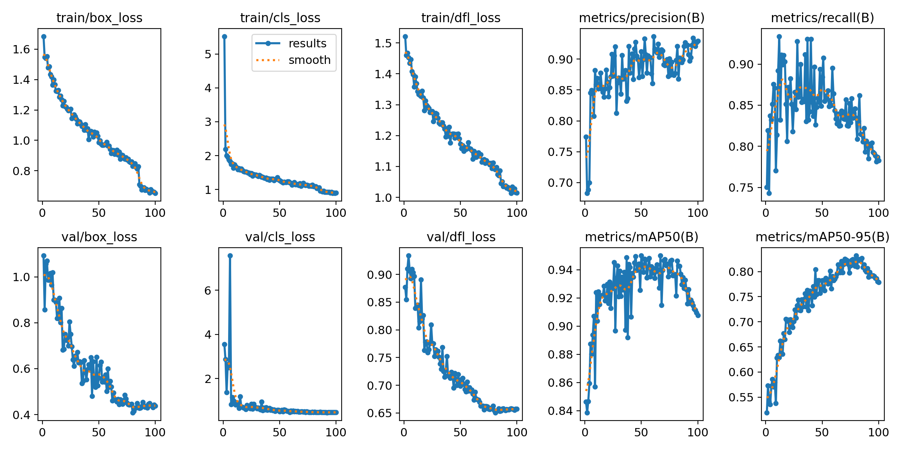
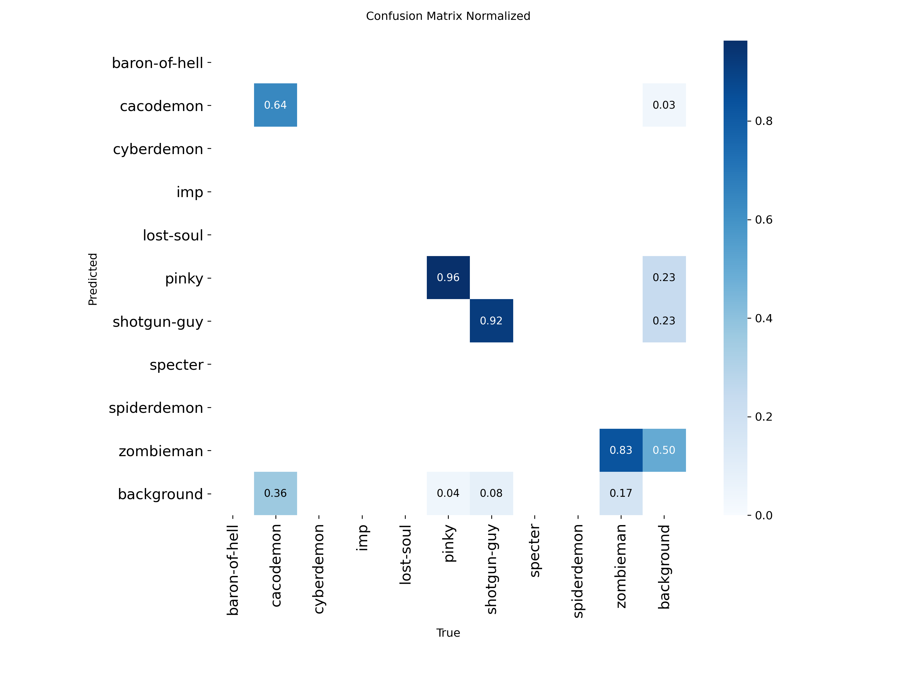
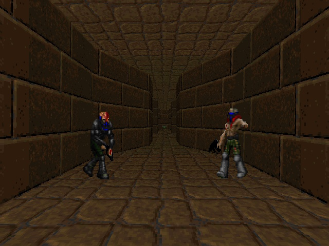
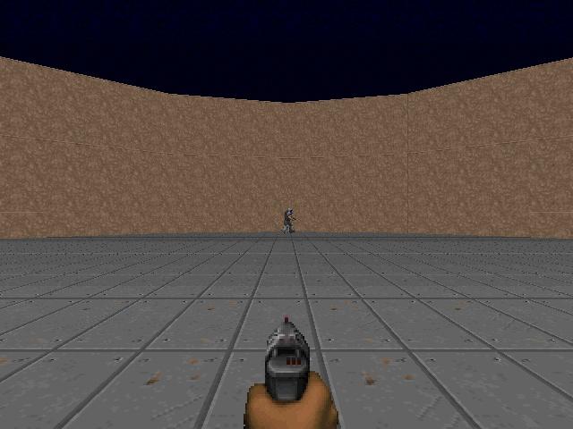
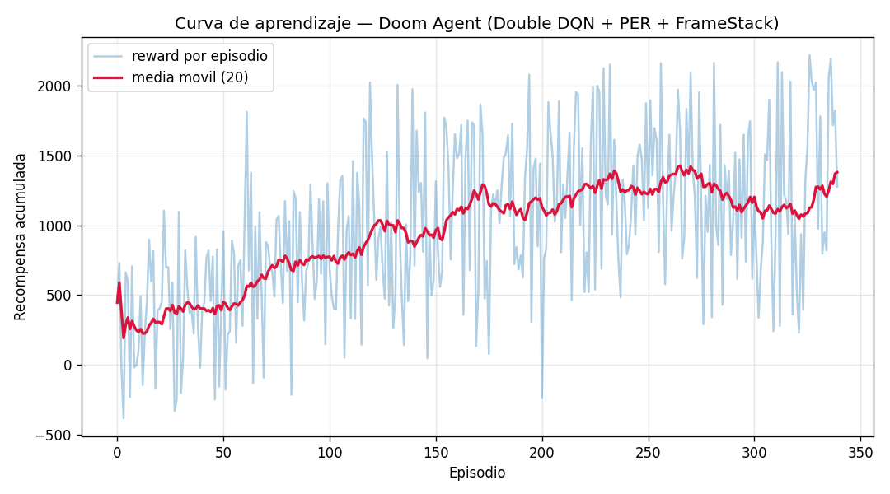

Detector entrenado sobre un dataset in-domain auto-etiquetado desde el propio motor, sin anotación manual.
Cada frame del juego pasa por un detector YOLOv8 que lo convierte en un vector semántico de 13 variables (hay enemigo, a qué lado, qué tan cerca, vida, munición). Tres frames se apilan en un estado de 39 dimensiones que alimenta una red Double DQN con arquitectura Dueling, entrenada con Prioritized Experience Replay y retornos n-step bajo una función de recompensa diseñada según el escenario.
El agente no ve el mapa completo: solo el frame que tiene enfrente. En cada instante debe decidir una acción (girar, avanzar, disparar) para maximizar una recompensa a futuro (matar enemigos, sobrevivir, llegar a la meta). Esto es un Proceso de Decisión de Markov parcialmente observable. La dificultad de aprender directamente desde píxeles motiva la decisión central del diseño: separar percepción de control.
Un DQN sobre imágenes (240×320×3) debe aprender a la vez a "ver" y a "decidir". Eso exige millones de frames y una CNN profunda. Bajo cuota de GPU es inviable iterar.
YOLO traduce el frame a un estado semántico de baja dimensión. El agente RL aprende solo el control sobre 39 números interpretables, no sobre 230.400 píxeles. Mucho más eficiente en muestras.
Detector YOLOv8s entrenado en dominio. Provee, por frame: clase y caja de cada enemigo, y vía el depth buffer de ViZDoom, la distancia. Es el "sistema visual" del agente.
El wrapper RL construye el estado, define la recompensa según el escenario y entrena el agente Double DQN. Es el "sistema de decisión": qué hacer con lo que se ve.
El detector no se entrenó con datos genéricos de internet sino con imágenes del propio motor del juego, lo que elimina la brecha de dominio que hacía "alucinar" enemigos en las paredes. La clave: ViZDoom expone un labels_buffer con la posición y el nombre exactos de cada objeto en pantalla, lo que permite generar las cajas ground-truth automáticamente.

Se recorren cuatro escenarios (basic, deadly_corridor, defend_the_center, freedoom) con acciones aleatorias. Por cada frame, el labels_buffer entrega las cajas reales. Se conserva un 20% de frames vacíos como fondo para enseñar a no detectar nada cuando no hay nada.
2.213 imágenes etiquetadas (1.817 entrenamiento, 396 validación). El resultado es el modelo doom-v4, que se versiona en el repositorio para reproducir el pipeline sin re-etiquetar.
Las cajas más vida y munición se comprimen en el vector de estado. Solo se confía en las 4 clases que el detector reconoce de forma fiable: zombieman, imp, pinky, shotgun-guy.
Cada feature está en un rango acotado y tiene un significado físico claro. Eso hace que la política sea interpretable: se puede leer por qué el agente decidió girar o disparar.
Si la percepción alucina, el agente aprende a reaccionar a fantasmas. Por eso se validó el detector antes de entrenar la política, y se restringió la recompensa a las clases realmente confiables.


La matriz revela el límite real del detector y justifica una decisión de diseño:
La decisión de confiar solo en cuatro clases no es una limitación oculta: es el resultado de leer la matriz de confusión y preferir una percepción estrecha pero fiable a una amplia pero ruidosa.
El objetivo del agente es encontrar una política que maximice el retorno descontado. El valor de tomar la acción a en el estado s y luego actuar de forma óptima se llama función de acción-valor Q*, y satisface la ecuación de Bellman:
Con factor de descuento γ = 0.99: el agente valora el futuro casi tanto como el presente, necesario porque las recompensas (kills, llegar a la meta) llegan con retraso respecto a las acciones que las causaron.
Como el espacio de estados es continuo, se aproxima Q con una red de parámetros θ. El DQN estándar sobreestima los valores porque usa el mismo max para elegir y evaluar. Double DQN lo corrige: una red (θ) elige la mejor acción y la red objetivo (θ⁻) la evalúa.
El primer término acumula las recompensas reales de N = 3 pasos (retorno n-step): da crédito más preciso a secuencias de acciones, en vez de propagar de a un paso. El segundo término es el "bootstrap": el valor estimado del estado a N pasos, descontado por γN. El factor (1 − d) anula el bootstrap si el episodio terminó (d = 1).
La red no estima Q directamente, sino que la descompone en el valor del estado V(s) (qué tan bueno es estar aquí) y la ventaja A(s,a) (cuánto mejor es cada acción frente al promedio):
Restar la media de la ventaja resuelve la ambigüedad de identificabilidad (sin ella, sumar una constante a V y restarla a A daría la misma Q). La ganancia práctica: el agente actualiza V(s) en cada paso aunque no haya probado todas las acciones, así aprende más rápido qué estados son peligrosos.
El aprendizaje empuja la predicción hacia el objetivo. El residuo es el error de diferencia temporal (TD):
Este δ cumple doble papel: define la pérdida (página siguiente) y, en valor absoluto, mide qué tan "sorprendente" fue una transición, lo que el Prioritized Replay aprovecha para muestrear.
En vez de muestrear el buffer de forma uniforme, se priorizan las transiciones con mayor TD-error (de las que más hay que aprender). La prioridad y la probabilidad de muestreo son:
Con α = 0.6: interpola entre muestreo uniforme (α=0) y puramente proporcional a la prioridad (α=1). El muestreo proporcional es O(log N) gracias a un árbol de sumas (SumTree).
Priorizar introduce un sesgo: las transiciones "difíciles" aparecen más de lo que deberían. Se corrige con pesos de muestreo por importancia (IS):
El exponente β sube de 0.4 a 1.0 a lo largo del entrenamiento (annealing): la corrección importa más al final, cuando la política ya casi convergió. Se normaliza por el máximo para que los pesos solo reduzcan, nunca amplifiquen, el tamaño del paso.
La pérdida es el error de Huber (suave: cuadrático cerca de cero, lineal lejos, robusto a outliers), ponderado por los pesos IS y promediado en el lote de tamaño B = 512:
Optimizada con Adam (lr = 5×10⁻⁴ con recocido coseno) y recorte de gradiente a norma 10. La red objetivo θ⁻ se sincroniza con θ cada 2.000 pasos, lo que estabiliza el objetivo móvil.
El agente explora al azar con probabilidad ε y explota su política en otro caso. ε decae linealmente de exploración total a casi pura explotación:
Además, en la sala se enmascaran las acciones de avanzar: sus valores Q se fijan a −∞ antes del argmax, forzando un comportamiento de torreta sin necesidad de reentrenar la red.
Observar estado → elegir acción (ε-greedy con máscara) → ejecutar y observar (r, s′) → acumular retorno n-step → guardar en el buffer priorizado → muestrear lote según prioridad → calcular objetivo Double DQN → minimizar Huber ponderado por IS → actualizar prioridades con el nuevo |δ|.
El reward nativo de ViZDoom premia la velocidad de avance, lo que el agente aprende a explotar (farmear) sin completar el nivel. Se descarta y se construye una recompensa propia, distinta según la geometría del escenario.


| Componente | Valor | Razón de diseño |
|---|---|---|
| Completar nivel (pasillo) | +300 | Premio terminal que domina cualquier farmeo: llegar vivo al chaleco antes del timeout. |
| Matar enemigo | +150 | Objetivo principal. Señal fuerte y dispersa, una por baja confirmada. |
| Morir | −100 | Castigo explícito; sin él, "lanzarse y morir" salía rentable. |
| Sobrevivir la ronda (sala) | +50 | Equivalente de la meta en la sala: aguantar hasta el timeout. |
| Disparar a la nada | −5 | Penaliza malgastar munición; rompe el "rociar paredes". |
| Disparar con blanco | +2 | Señal densa que guía hacia el comportamiento de combate. |
| Esquivar (strafe) con enemigo | +0.8 | Fomenta evasión lateral cuando hay amenaza. |
| Daño recibido | −0.8·Δ | Proporcional a la vida perdida: enseña a cubrirse. |
| Progreso (pasillo) | +0.2·Δx | Solo por terreno nuevo ganado hacia la meta (delta de la X máxima). No es velocidad, así que ir y venir no farmea. |
| Encarar / barrer (sala) | +0.2 / +0.05 | Premia centrar al enemigo y girar para escanear cuando no se ve ninguno. |
| Costo por paso (pasillo) | −0.05 | Desincentiva merodear; en la sala se sustituye por un bono de supervivencia. |
La idea central del progreso "no farmeable": recompensar solo el avance monótono hacia la meta (cada unidad de terreno nuevo, una sola vez) en lugar de la velocidad. Así el óptimo de la recompensa coincide con completar el nivel, no con moverse mucho.

Separar percepción de control fue la decisión acertada. Aprender sobre 39 features semánticas en vez de píxeles crudos hizo el problema tratable bajo cuota de GPU, y dejó una política interpretable.
El auto-etiquetado in-domain resolvió las alucinaciones. Entrenar el detector con frames del propio motor (mAP 0.908) eliminó la brecha de dominio; leer la matriz de confusión guió la decisión de confiar solo en cuatro clases.
El diseño de la recompensa importa tanto como el algoritmo. Descartar el reward nativo farmeable y construir un progreso no farmeable más eventos jerárquicos fue lo que alineó el incentivo del agente con completar el nivel.
Las extensiones del DQN se justifican una a una. Double corrige sobreestimación, Dueling acelera el aprendizaje de valor, PER enfoca las muestras difíciles y n-step mejora la asignación de crédito. Cada una responde a un problema concreto del DQN base.
Líneas de mejora: ampliar el dataset a más clases de enemigos, comparar contra un baseline de DQN sobre píxeles para cuantificar la ganancia de la percepción explícita, y extender el presupuesto de pasos. La solución completa es un notebook autocontenido (doom_entrega.ipynb) que muestra el código de cada módulo inline, carga el detector ya entrenado desde el repositorio y entrena la política en GPU.